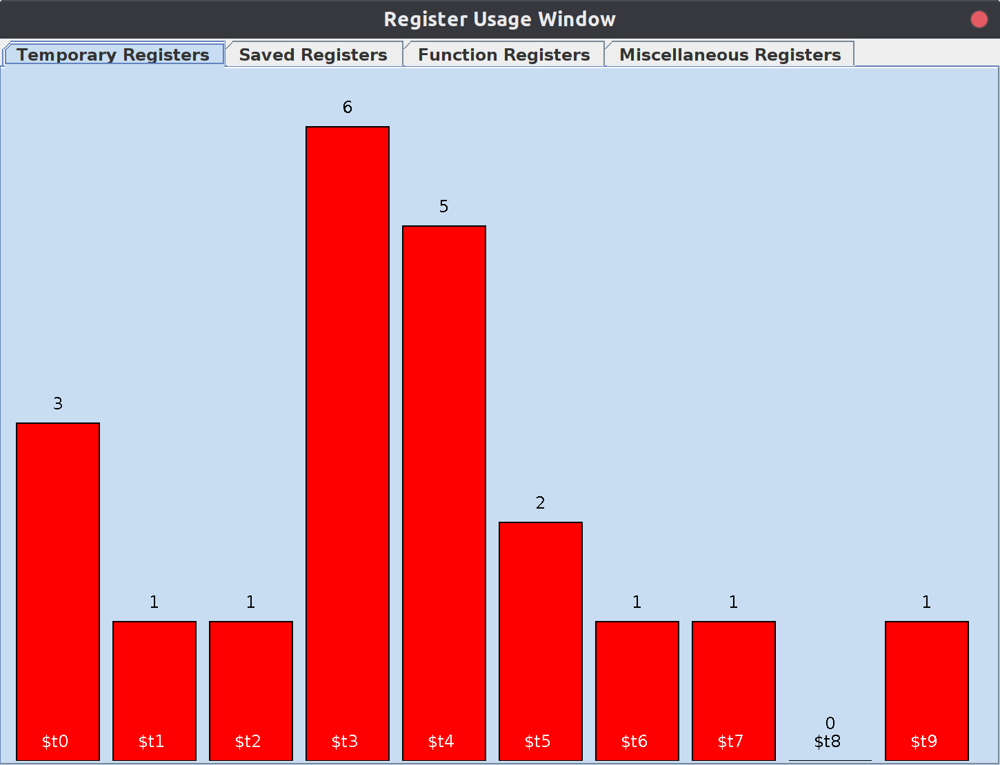
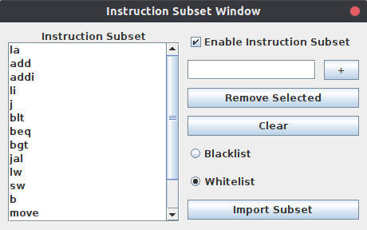

Phobos Menu
The Phobos menu in MARS is accessible on the top menu bar to the right of Help. From the dropdown menu, you will find the following features.
-
Comma Constraint
Tick the checkbox Comma Constraint to enable this feature. When enabled, this feature strictly requires commas to be used in instructions and arrays for the program to assemble.
Example usage:
addi $t1 $t0 1 # This line will NOT assemble because of the lack of commas addi $t1, $t0, 1 # This line WILL assemble because it has the correct number of commas
Note that if the Comma Constraint feature were to be disabled, the above two lines would both assemble.
-
Register Name Constraint
Tick the checkbox Register Name Constraint to enable this feature. When enabled, this feature strictly requires register names to be used, rather than register numbers, for the program to assemble.
Example usage:
addi $1, $0, 1 # This line will NOT assemble because register numbers are being used addi $t1, $t0, 1 # This line WILL assemble because register names are being used
Note that if the Register Name Constraint feature were to be disabled, the above two lines would both assemble (albeit, the first line would then be using possibly different registers than intended).
-
Offset Constraint
Tick the checkbox Offset Constraint to enable this feature. When enabled, this feature strictly requires an offset to be used when using the lw or sw instructions.
Example usage:
lw $t0, ($t1) # This line will NOT assemble because there is not an offset lw $t0, 0($t1) # This line WILL assemble because an offset is supplied
-
Show Register Usage
Tick the checkbox Show Register Usage on Assemble to enable this feature. When enabled, this feature will show a popup window when a program is successfully assembled. The popup window will have multiple tabs that one can select (or move between using the arrow keys) to see bar charts on the amount of registers that the assembled program contains.
Example usage:
The above image shows the usage of temporary registers. Using this image alone, one can see how many of each temporary registers are used within the program. According to the image, the program contains six $t3 registers, one $t2 register, and zero $t8 registers.
-
Instruction Subset
Select the option Instruction Subset ... to bring up the following dialog window:
This feature can be enabled by ticking the Enable Instruction Subset checkbox. When enabled, this feature allows one to use a whitelist or blacklist to determine what subset of instructions can or can not be used, respectively. Any instructions that are currently in the subset are displayed in the list on the left.
-
Add Instruction
To add an instruction, simply type in any valid instruction into the text box at the top right and then press the + button. If the instruction is invalid, a warning will pop up and the instruction will not be added to the subset.
-
Removed Selected
To remove a selected instruction first select any amount of instructions. Specific instructions can be selected by clicking on them in the subset. To select more than one contiguous instruction hold Shift and click down to the last instruction to be selected. To deselect a specific instruction that you have selected, hold Ctrl and click the instruction. One can also hold Ctrl to pick more than one instruction that is not contiguous.
Once the instruction(s) in the subset to be removed have been selected, press the Remove Selected button to remove them.
-
Clear
To clear all instructions from the subset, press the Clear button.
-
Blacklist/Whitelist
If Blacklist is selected, then all instructions in the subset are effectively "banned" from being used within the program. If any instructions that are in the subset are used, then the program will not assemble.
If Whitelist is selected, then all instructions in the subset are the only ones allowed to be used within the program. If any instructions that are NOT in the subset are used, then the program will not assemble.
-
Import Subset
To import specific instructions from a text file, press the Import Subset button. One must have a text file (*.txt extension only) prepared beforehand. Within this text file, any instructions one would like to add to the subset must be entered each on their own line. Any invalid instructions entered will be ignored and not added to the subset.
Example text file:
add addi lw jal
When importing a text file, a prompt will appear asking whether to Overwrite or Add. To overwrite the current instruction subset with the instructions being imported, select the Overwrite button. To add the instructions from the text file to the existing instruction subset, select the Add button. Duplicate instructions do not have to be worried about as duplicates are filtered out.
-
Auto Layout Feature
There are three ways one can use the Auto Layout feature in MARS while editing a file:
- Go to Edit -> Auto Layout
- Press the
 Auto Layout icon in the icon menu below the top menu bar
Auto Layout icon in the icon menu below the top menu bar - Press Ctrl + Q
Auto Layout can be used at any time to automatically reformat a document to the specified guidelines:
- All labels will have no whitespace before them.
- Every other type of instruction will have one tab amount of whitespace before them.
- All inline comments will be aligned with each other.
- Comments on their own line will not be changed (this includes the whitespace before them).
Example usage:
This is the program before Auto Layout is used.
################### # Block of comments ################### .data a: .word 128 # This is a word .text lw $t0, a LABEL: # Label to jump back to addi $t0, $t0, -1 # Subtract one bgt $t0, 0, LABEL
This is the program after Auto Layout (with editor tab size of 2) is used.
################### # Block of comments ################### .data a: .word 128 # This is a word .text lw $t0, a LABEL: # Label to jump back to addi $t0, $t0, -1 # Subtract one bgt $t0, 0, LABEL